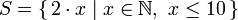

Starting Out
Ready, set, go!
 Alright, let's get started! If you're the sort of horrible person who doesn't read introductions to things and you skipped it, you might want to read the last section in the introduction anyway because it explains what you need to follow this tutorial and how we're going to load functions. The first thing we're going to do is run ghc's interactive mode and call some function to get a very basic feel for haskell. Open your terminal and type in
Alright, let's get started! If you're the sort of horrible person who doesn't read introductions to things and you skipped it, you might want to read the last section in the introduction anyway because it explains what you need to follow this tutorial and how we're going to load functions. The first thing we're going to do is run ghc's interactive mode and call some function to get a very basic feel for haskell. Open your terminal and type in ghci. You will be greeted with something like this.
GHCi, version 6.8.2: http://www.haskell.org/ghc/ :? for help Loading package base ... linking ... done. Prelude>
Congratulations, you're in GHCI! The prompt here is Prelude> but because it can get longer when you load stuff into the session, we're going to use ghci>. If you want to have the same prompt, just type in :set prompt "ghci> ".
Here's some simple arithmetic.
ghci> 2 + 15 17 ghci> 49 * 100 4900 ghci> 1892 - 1472 420 ghci> 5 / 2 2.5 ghci>
This is pretty self-explanatory. We can also use several operators on one line and all the usual precedence rules are obeyed. We can use parentheses to make the precedence explicit or to change it.
ghci> (50 * 100) - 4999 1 ghci> 50 * 100 - 4999 1 ghci> 50 * (100 - 4999) -244950
Pretty cool, huh? Yeah, I know it's not but bear with me. A little pitfall to watch out for here is negating numbers. If we want to have a negative number, it's always best to surround it with parentheses. Doing 5 * -3 will make GHCI yell at you but doing 5 * (-3) will work just fine.
Boolean algebra is also pretty straightforward. As you probably know, && means a boolean and, || means a boolean or. not negates a True or a False.
ghci> True && False False ghci> True && True True ghci> False || True True ghci> not False True ghci> not (True && True) False
Testing for equality is done like so.
ghci> 5 == 5 True ghci> 1 == 0 False ghci> 5 /= 5 False ghci> 5 /= 4 True ghci> "hello" == "hello" True
What about doing 5 + "llama" or 5 == True? Well, if we try the first snippet, we get a big scary error message!
No instance for (Num [Char]) arising from a use of `+' at <interactive>:1:0-9 Possible fix: add an instance declaration for (Num [Char]) In the expression: 5 + "llama" In the definition of `it': it = 5 + "llama"
Yikes! What GHCI is telling us here is that "llama" is not a number and so it doesn't know how to add it to 5. Even if it wasn't "llama" but "four" or "4", Haskell still wouldn't consider it to be a number. + expects its left and right side to be numbers. If we tried to do True == 5, GHCI would tell us that the types don't match. Whereas + works only on things that are considered numbers, == works on any two things that can be compared. But the catch is that they both have to be the same type of thing. You can't compare apples and oranges. We'll take a closer look at types a bit later. Note: you can do 5 + 4.0 because 5 is sneaky and can act like an integer or a floating-point number. 4.0 can't act like an integer, so 5 is the one that has to adapt.
You may not have known it but we've been using functions now all along. For instance, * is a function that takes two numbers and multiplies them. As you've seen, we call it by sandwiching it between them. This is what we call an infix function. Most functions that aren't used with numbers are prefix functions. Let's take a look at them.
 Functions are usually prefix so from now on we won't explicitly state that a function is of the prefix form, we'll just assume it. In most imperative languages functions are called by writing the function name and then writing its parameters in parentheses, usually separated by commas. In Haskell, functions are called by writing the function name, a space and then the parameters, separated by spaces. For a start, we'll try calling one of the most boring functions in Haskell.
Functions are usually prefix so from now on we won't explicitly state that a function is of the prefix form, we'll just assume it. In most imperative languages functions are called by writing the function name and then writing its parameters in parentheses, usually separated by commas. In Haskell, functions are called by writing the function name, a space and then the parameters, separated by spaces. For a start, we'll try calling one of the most boring functions in Haskell.
ghci> succ 8 9
The succ function takes anything that has a defined successor and returns that successor. As you can see, we just separate the function name from the parameter with a space. Calling a function with several parameters is also simple. The functions min and max take two things that can be put in an order (like numbers!). min returns the one that's lesser and max returns the one that's greater. See for yourself:
ghci> min 9 10 9 ghci> min 3.4 3.2 3.2 ghci> max 100 101 101
Function application (calling a function by putting a space after it and then typing out the parameters) has the highest precedence of them all. What that means for us is that these two statements are equivalent.
ghci> succ 9 + max 5 4 + 1 16 ghci> (succ 9) + (max 5 4) + 1 16
However, if we wanted to get the successor of the product of numbers 9 and 10, we couldn't write succ 9 * 10 because that would get the successor of 9, which would then be multiplied by 10. So 100. We'd have to write succ (9 * 10) to get 91.
If a function takes two parameters, we can also call it as an infix function by surrounding it with backticks. For instance, the div function takes two integers and does integral division between them. Doing div 92 10 results in a 9. But when we call it like that, there may be some confusion as to which number is doing the division and which one is being divided. So we can call it as an infix function by doing 92 `div` 10 and suddenly it's much clearer.
Lots of people who come from imperative languages tend to stick to the notion that parentheses should denote function application. For example, in C, you use parentheses to call functions like foo(), bar(1) or baz(3, "haha"). Like we said, spaces are used for function application in Haskell. So those functions in Haskell would be foo, bar 1 and baz 3 "haha". So if you see something like bar (bar 3), it doesn't mean that bar is called with bar and 3 as parameters. It means that we first call the function bar with 3 as the parameter to get some number and then we call bar again with that number. In C, that would be something like bar(bar(3)).
Baby's first functions
In the previous section we got a basic feel for calling functions. Now let's try making our own! Open up your favorite text editor and punch in this function that takes a number and multiplies it by two.
doubleMe x = x + x
Functions are defined in a similar way that they are called. The function name is followed by parameters seperated by spaces. But when defining functions, there's a = and after that we define what the function does. Save this as baby.hs or something. Now navigate to where it's saved and run ghci from there. Once inside GHCI, do :l baby. Now that our script is loaded, we can play with the function that we defined.
ghci> :l baby [1 of 1] Compiling Main ( baby.hs, interpreted ) Ok, modules loaded: Main. ghci> doubleMe 9 18 ghci> doubleMe 8.3 16.6
Because + works on integers as well as on floating-point numbers (anything that can be considered a number, really), our function also works on any number. Let's make a function that takes two numbers and multiplies each by two and then adds them together.
doubleUs x y = x*2 + y*2
Simple. We could have also defined it as doubleUs x y = x + x + y + y. Testing it out produces pretty predictable results (remember to append this function to the baby.hs file, save it and then do :l baby inside GHCI).
ghci> doubleUs 4 9 26 ghci> doubleUs 2.3 34.2 73.0 ghci> doubleUs 28 88 + doubleMe 123 478
As expected, you can call your own functions from other functions that you made. With that in mind, we could redefine doubleUs like this:
doubleUs x y = doubleMe x + doubleMe y
This is a very simple example of a common pattern you will see throughout Haskell. Making basic functions that are obviously correct and then combining them into more complex functions. This way you also avoid repetition. What if some mathematicians figured out that 2 is actually 3 and you had to change your program? You could just redefine doubleMe to be x + x + x and since doubleUs calls doubleMe, it would automatically work in this strange new world where 2 is 3.
Functions in Haskell don't have to be in any particular order, so it doesn't matter if you define doubleMe first and then doubleUs or if you do it the other way around.
Now we're going to make a function that multiplies a number by 2 but only if that number is smaller than or equal to 100 because numbers bigger than 100 are big enough as it is!
doubleSmallNumber x = if x > 100
then x
else x*2

Right here we introduced Haskell's if statement. You're probably familiar with if statements from other languages. The difference between Haskell's if statement and if statements in imperative languages is that the else part is mandatory in Haskell. In imperative languages you can just skip a couple of steps if the condition isn't satisfied but in Haskell every expression and function must return something. We could have also written that if statement in one line but I find this way more readable. Another thing about the if statement in Haskell is that it is an expression. An expression is basically a piece of code that returns a value. 5 is an expression because it returns 5, 4 + 8 is an expression, x + y is an expression because it returns the sum of x and y. Because the else is mandatory, an if statement will always return something and that's why it's an expression. If we wanted to add one to every number that's produced in our previous function, we could have written its body like this.
doubleSmallNumber' x = (if x > 100 then x else x*2) + 1
Had we omitted the parentheses, it would have added one only if x wasn't greater than 100. Note the ' at the end of the function name. That apostrophe doesn't have any special meaning in Haskell's syntax. It's a valid character to use in a function name. We usually use ' to either denote a strict version of a function (one that isn't lazy) or a slightly modified version of a function or a variable. Because ' is a valid character in functions, we can make a function like this.
conanO'Brien = "It's a-me, Conan O'Brien!"
There are two noteworthy things here. The first is that in the function name we didn't capitalize Conan's name. That's because functions can't begin with uppercase letters. We'll see why a bit later. The second thing is that this function doesn't take any parameters. When a function doesn't take any parameters, we usually say it's a definition (or a name). Because we can't change what names (and functions) mean once we've defined them, conanO'Brien and the string "It's a-me, Conan O'Brien!" can be used interchangeably.
An intro to lists
 Much like shopping lists in the real world, lists in Haskell are very useful. It's the most used data structure and it can be used in a multitude of different ways to model and solve a whole bunch of problems. Lists are SO awesome. In this section we'll look at the basics of lists, strings (which are lists) and list comprehensions.
Much like shopping lists in the real world, lists in Haskell are very useful. It's the most used data structure and it can be used in a multitude of different ways to model and solve a whole bunch of problems. Lists are SO awesome. In this section we'll look at the basics of lists, strings (which are lists) and list comprehensions.
In Haskell, lists are a homogenous data structure. It stores several elements of the same type. That means that we can have a list of integers or a list of characters but we can't have a list that has a few integers and then a few characters. And now, a list!
let keyword to define a name right in GHCI. Doing let a = 1 inside GHCI is the equivalent of writing a = 1 in a script and then loading it. ghci> let lostNumbers = [4,8,15,16,23,42] ghci> lostNumbers [4,8,15,16,23,42]
As you can see, lists are denoted by square brackets and the values in the lists are separated by commas. If we tried a list like [1,2,'a',3,'b','c',4], Haskell would complain that characters (which are, by the way, denoted as a character between single quotes) are not numbers. Speaking of characters, strings are just lists of characters. "hello" is just syntactic sugar for ['h','e','l','l','o']. Because strings are lists, we can use list functions on them, which is really handy.
A common task is putting two lists together. This is done by using the ++ operator.
ghci> [1,2,3,4] ++ [9,10,11,12] [1,2,3,4,9,10,11,12] ghci> "hello" ++ " " ++ "world" "hello world" ghci> ['w','o'] ++ ['o','t'] "woot"
Watch out when repeatedly using the ++ operator on long strings. When you put together two lists (even if you append a singleton list to a list, for instance: [1,2,3] ++ [4]), internally, Haskell has to walk through the whole list on the left side of ++. That's not a problem when dealing with lists that aren't too big. But putting something at the end of a list that's fifty million entries long is going to take a while. However, putting something at the beginning of a list using the : operator (also called the cons operator) is instantaneous.
ghci> 'A':" SMALL CAT" "A SMALL CAT" ghci> 5:[1,2,3,4,5] [5,1,2,3,4,5]
Notice how : takes a number and a list of numbers or a character and a list of characters, whereas ++ takes two lists. Even if you're adding an element to the end of a list with ++, you have to surround it with square brackets so it becomes a list.
[1,2,3] is actually just syntactic sugar for 1:2:3:[]. [] is an empty list. If we prepend 3 to it, it becomes [3]. If we prepend 2 to that, it becomes [2,3], and so on.
Note: [], [[]] and[[],[],[]] are all different things. The first one is an empty list, the seconds one is a list that contains one empty list, the third one is a list that contains three empty lists.
If you want to get an element out of a list by index, use !!. The indices start at 0.
ghci> "Steve Buscemi" !! 6 'B' ghci> [9.4,33.2,96.2,11.2,23.25] !! 1 33.2
But if you try to get the sixth element from a list that only has four elements, you'll get an error so be careful!
Lists can also contain lists. They can also contain lists that contain lists that contain lists …
ghci> let b = [[1,2,3,4],[5,3,3,3],[1,2,2,3,4],[1,2,3]] ghci> b [[1,2,3,4],[5,3,3,3],[1,2,2,3,4],[1,2,3]] ghci> b ++ [[1,1,1,1]] [[1,2,3,4],[5,3,3,3],[1,2,2,3,4],[1,2,3],[1,1,1,1]] ghci> [6,6,6]:b [[6,6,6],[1,2,3,4],[5,3,3,3],[1,2,2,3,4],[1,2,3]] ghci> b !! 2 [1,2,2,3,4]
The lists within a list can be of different lengths but they can't be of different types. Just like you can't have a list that has some characters and some numbers, you can't have a list that has some lists of characters and some lists of numbers.
Lists can be compared if the stuff they contain can be compared. When using <, <=, > and >= to compare lists, they are compared in lexicographical order. First the heads are compared. If they are equal then the second elements are compared, etc.
ghci> [3,2,1] > [2,1,0] True ghci> [3,2,1] > [2,10,100] True ghci> [3,4,2] > [3,4] True ghci> [3,4,2] > [2,4] True ghci> [3,4,2] == [3,4,2] True
What else can you do with lists? Here are some basic functions that operate on lists.
head takes a list and returns its head. The head of a list is basically its first element.
ghci> head [5,4,3,2,1] 5
tail takes a list and returns its tail. In other words, it chops off a list's head.
ghci> tail [5,4,3,2,1] [4,3,2,1]
last takes a list and returns its last element.
ghci> last [5,4,3,2,1] 1
init takes a list and returns everything except its last element.
ghci> init [5,4,3,2,1] [5,4,3,2]
If we think of a list as a monster, here's what's what.

But what happens if we try to get the head of an empty list?
ghci> head [] *** Exception: Prelude.head: empty list
Oh my! It all blows up in our face! If there's no monster, it doesn't have a head. When using head, tail, last and init, be careful not to use them on empty lists. This error cannot be caught at compile time so it's always good practice to take precautions against accidentally telling Haskell to give you some elements from an empty list.
length takes a list and returns its length, obviously.
ghci> length [5,4,3,2,1] 5
null checks if a list is empty. If it is, it returns True, otherwise it returns False. Use this function instead of xs == [] (if you have a list called xs)
ghci> null [1,2,3] False ghci> null [] True
reverse reverses a list.
ghci> reverse [5,4,3,2,1] [1,2,3,4,5]
take takes number and a list. It extracts that many elements from the beginning of the list. Watch.
ghci> take 3 [5,4,3,2,1] [5,4,3] ghci> take 1 [3,9,3] [3] ghci> take 5 [1,2] [1,2] ghci> take 0 [6,6,6] []
See how if we try to take more elements than there are in the list, it just returns the list. If we try to take 0 elements, we get an empty list.
drop works in a similar way, only it drops the number of elements from the beginning of a list.
ghci> drop 3 [8,4,2,1,5,6] [1,5,6] ghci> drop 0 [1,2,3,4] [1,2,3,4] ghci> drop 100 [1,2,3,4] []
maximum takes a list of stuff that can be put in some kind of order and returns the biggest element.
minimum returns the smallest.
ghci> minimum [8,4,2,1,5,6] 1 ghci> maximum [1,9,2,3,4] 9
sum takes a list of numbers and returns their sum.
product takes a list of numbers and returns their product.
ghci> sum [5,2,1,6,3,2,5,7] 31 ghci> product [6,2,1,2] 24 ghci> product [1,2,5,6,7,9,2,0] 0
elem takes a thing and a list of things and tells us if that thing is an element of the list. It's usually called as an infix function because it's easier to read that way.
ghci> 4 `elem` [3,4,5,6] True ghci> 10 `elem` [3,4,5,6] False
Those were a few basic functions that operate on lists. We'll take a look at more list functions later
Texas ranges
 What if we want a list of all numbers between 1 and 20? Sure, we could just type them all out but obviously that's not a solution for gentlemen who demand excellence from their programming languages. Instead, we'll use ranges. Ranges are a way of making lists that are arithmetic sequences of elements that can be enumerated. Numbers can be enumerated. One, two, three, four, etc. Characters can also be enumerated. The alphabet is an enumeration of characters from A to Z. Names can't be enumerated. What comes after "John"? I don't know.
What if we want a list of all numbers between 1 and 20? Sure, we could just type them all out but obviously that's not a solution for gentlemen who demand excellence from their programming languages. Instead, we'll use ranges. Ranges are a way of making lists that are arithmetic sequences of elements that can be enumerated. Numbers can be enumerated. One, two, three, four, etc. Characters can also be enumerated. The alphabet is an enumeration of characters from A to Z. Names can't be enumerated. What comes after "John"? I don't know.
To make a list containing all the natural numbers from 1 to 20, you just write [1..20]. That is the equivalent of writing [1,2,3,4,5,6,7,8,9,10,11,12,13,14,15,16,17,18,19,20] and there's no difference between writing one or the other except that writing out long enumeration sequences manually is stupid.
ghci> [1..20] [1,2,3,4,5,6,7,8,9,10,11,12,13,14,15,16,17,18,19,20] ghci> ['a'..'z'] "abcdefghijklmnopqrstuvwxyz" ghci> ['K'..'Z'] "KLMNOPQRSTUVWXYZ"
Ranges are cool because you can also specify a step. What if we want all even numbers between 1 and 20? Or every third number between 1 and 20?
ghci> [2,4..20] [2,4,6,8,10,12,14,16,18,20] ghci> [3,6..20] [3,6,9,12,15,18]
It's simply a matter of separating the first two elements with a comma and then specifying what the upper limit is. While pretty smart, ranges with steps aren't as smart as some people expect them to be. You can't do [1,2,4,8,16..100] and expect to get all the powers of 2. Firstly because you can only specify one step. And secondly because some sequences that aren't arithmetic are ambiguous if given only by a few of their first terms.
To make a list with all the numbers from 20 to 1, you can't just do [20..1], you have to do [20,19..1].
Watch out when using floating point numbers in ranges! Because they are not completely precise (by definition), their use in ranges can yield some pretty funky results.
ghci> [0.1, 0.3 .. 1] [0.1,0.3,0.5,0.7,0.8999999999999999,1.0999999999999999]
My advice is not to use them in list ranges.
You can also use ranges to make infinite lists by just not specifying an upper limit. Later we'll go into more detail on infinite lists. For now, let's examine how you would get the first 24 multiples of 13. Sure, you could do [13,26..24*13]. But there's a better way: take 24 [13,26..]. Because Haskell is lazy, it won't try to evaluate the infinite list immediately because it would never finish. It'll wait to see what you want to get out of that infinite lists. And here it sees you just want the first 24 elements and it gladly obliges.
A handful of functions that produce infinite lists:
cycle takes a list and cycles it into an infinite list. If you just try to display the result, it will go on forever so you have to slice it off somewhere.
ghci> take 10 (cycle [1,2,3]) [1,2,3,1,2,3,1,2,3,1] ghci> take 12 (cycle "LOL ") "LOL LOL LOL "
repeat takes an element and produces an infinite list of just that element. It's like cycling a list with only one element.
ghci> take 10 (repeat 5) [5,5,5,5,5,5,5,5,5,5]
Although it's simpler to just use the replicate function if you want some number of the same element in a list. replicate 3 10 returns [10,10,10].
I'm a list comprehension
If you've ever taken a course in mathematics, you've probably run into set comprehensions. They're normally used for building more specific sets out of general sets. A basic comprehension for a set that contains the first ten even natural numbers is . The part before the pipe is called the output function, x is the variable, N is the input set and x <= 10 is the predicate. That means that the set contains the doubles of all natural numbers that satisfy the predicate.
If we wanted to write that in Haskell, we could do something like take 10 [2,4..]. But what if we didn't want doubles of the first 10 natural numbers but some kind of more complex function applied on them? We could use a list comprehension for that. List comprehensions are very similar to set comprehensions. We'll stick to getting the first 10 even numbers for now. The list comprehension we could use is [x*2 | x <- [1..10]]. x is drawn from [1..10] and for every element in [1..10] (which we have bound to x), we get that element, only doubled. Here's that comprehension in action.
ghci> [x*2 | x <- [1..10]] [2,4,6,8,10,12,14,16,18,20]
As you can see, we get the desired results. Now let's add a condition (or a predicate) to that comprehension. Predicates go after the binding parts and are separated from them by a comma. Let's say we want only the elements which, doubled, are greater than or equal to 12.
ghci> [x*2 | x <- [1..10], x*2 >= 12] [12,14,16,18,20]
Cool, it works. How about if we wanted all numbers from 50 to 100 whose remainder when divided with the number 7 is 3? Easy.
ghci> [ x | x <- [50..100], x `mod` 7 == 3] [52,59,66,73,80,87,94]
Success! Note that weeding out lists by predicates is also called filtering. We took a list of numbers and we filtered them by the predicate. Now for another example. Let's say we want a comprehension that replaces each odd number greater than 10 with "BANG!" and each odd number that's less than 10 with "BOOM!". If a number isn't odd, we throw it out of our list. For convenience, we'll put that comprehension inside a function so we can easily reuse it.
boomBangs xs = [ if x < 10 then "BOOM!" else "BANG!" | x <- xs, odd x]
The last part of the comprehension is the predicate. The function odd returns True on an odd number and False on an even one. The element is included in the list only if all the predicates evaluate to True.
ghci> boomBangs [7..13] ["BOOM!","BOOM!","BANG!","BANG!"]
We can include several predicates. If we wanted all numbers from 10 to 20 that are not 13, 15 or 19, we'd do:
ghci> [ x | x <- [10..20], x /= 13, x /= 15, x /= 19] [10,11,12,14,16,17,18,20]
Not only can we have multiple predicates in list comprehensions (an element must satisfy all the predicates to be included in the resulting list), we can also draw from several lists. When drawing from several lists, comprehensions produce all combinations of the given lists and then join them by the output function we supply. A list produced by a comprehension that draws from two lists of length 4 will have a length of 16, provided we don't filter them. If we have two lists, [2,5,10] and [8,10,11] and we want to get the products of all the possible combinations between numbers in those lists, here's what we'd do.
ghci> [ x*y | x <- [2,5,10], y <- [8,10,11]] [16,20,22,40,50,55,80,100,110]
As expected, the length of the new list is 9. What if we wanted all possible products that are more than 50?
ghci> [ x*y | x <- [2,5,10], y <- [8,10,11], x*y > 50] [55,80,100,110]
How about a list comprehension that combines a list of adjectives and a list of nouns … for epic hilarity.
ghci> let nouns = ["hobo","frog","pope"] ghci> let adjectives = ["lazy","grouchy","scheming"] ghci> [adjective ++ " " ++ noun | adjective <- adjectives, noun <- nouns] ["lazy hobo","lazy frog","lazy pope","grouchy hobo","grouchy frog", "grouchy pope","scheming hobo","scheming frog","scheming pope"]
I know! Let's write our own version of length! We'll call it length'.
length' xs = sum [1 | _ <- xs]
_ means that we don't care what we'll draw from the list anyway so instead of writing a variable name that we'll never use, we just write _. This function replaces every element of a list with 1 and then sums that up. This means that the resulting sum will be the length of our list.
Just a friendly reminder: because strings are lists, we can use list comprehensions to process and produce strings. Here's a function that takes a string and removes everything except uppercase letters from it.
removeNonUppercase st = [ c | c <- st, c `elem` ['A'..'Z']]
Testing it out:
ghci> removeNonUppercase "Hahaha! Ahahaha!" "HA" ghci> removeNonUppercase "IdontLIKEFROGS" "ILIKEFROGS"
The predicate here does all the work. It says that the character will be included in the new list only if it's an element of the list ['A'..'Z']. Nested list comprehensions are also possible if you're operating on lists that contain lists. A list contains several lists of numbers. Let's remove all odd numbers without flattening the list.
ghci> let xxs = [[1,3,5,2,3,1,2,4,5],[1,2,3,4,5,6,7,8,9],[1,2,4,2,1,6,3,1,3,2,3,6]] ghci> [ [ x | x <- xs, even x ] | xs <- xxs] [[2,2,4],[2,4,6,8],[2,4,2,6,2,6]]
You can write list comprehensions across several lines. So if you're not in GHCI, it's better to split longer list comprehensions across multiple lines, especially if they're nested.
Tuples

In some ways, tuples are like lists — they are a way to store several values into a single value. However, there are a few fundamental differences. A list of numbers is a list of numbers. That's its type and it doesn't matter if it has only one number in it or an infinite amount of numbers. Tuples, however, are used when you know exactly how many values you want to combine and its type depends on how many components it has and the types of the components. They are denoted with parentheses and their components are separated by commas.
Another key difference is that they don't have to be homogenous. Unlike a list, a tuple can contain a combination of several types.
Think about how we'd represent a two-dimensional vector in Haskell. One way would be to use a list. That would kind of work. So what if we wanted to put a couple of vectors in a list to represent points of a shape on a two-dimensional plane? We could do something like [[1,2],[8,11],[4,5]]. The problem with that method is that we could also do stuff like [[1,2],[8,11,5],[4,5]], which Haskell has no problem with since it's still a list of lists with numbers but it kind of doesn't make sense. But a tuple of size two (also called a pair) is its own type, which means that a list can't have a couple of pairs in it and then a triple (a tuple of size three), so let's use that instead. Instead of surrounding the vectors with square brackets, we use parentheses: [(1,2),(8,11),(4,5)]. What if we tried to make a shape like [(1,2),(8,11,5),(4,5)]? Well, we'd get this error:
Couldn't match expected type `(t, t1)' against inferred type `(t2, t3, t4)' In the expression: (8, 11, 5) In the expression: [(1, 2), (8, 11, 5), (4, 5)] In the definition of `it': it = [(1, 2), (8, 11, 5), (4, 5)]
It's telling us that we tried to use a pair and a triple in the same list, which is not supposed to happen. You also couldn't make a list like [(1,2),("One",2)] because the first element of the list is a pair of numbers and the second element is a pair consisting of a string and a number. Tuples can also be used to represent a wide variety of data. For instance, if we wanted to represent someone's name and age in Haskell, we could use a triple: ("Christopher", "Walken", 55). As seen in this example, tuples can also contain lists.
Use tuples when you know in advance how many components some piece of data should have. Tuples are much more rigid because each different size of tuple is its own type, so you can't write a general function to append an element to a tuple — you'd have to write a function for appending to a pair, one function for appending to a triple, one function for appending to a 4-tuple, etc.
While there are singleton lists, there's no such thing as a singleton tuple. It doesn't really make much sense when you think about it. A singleton tuple would just be the value it contains and as such would have no benefit to us.
Like lists, tuples can be compared with each other if their components can be compared. Only you can't compare two tuples of different sizes, whereas you can compare two lists of different sizes. Two useful functions that operate on pairs:
fst takes a pair and returns its first component.
ghci> fst (8,11)
8
ghci> fst ("Wow", False)
"Wow"
snd takes a pair and returns its second component. Surprise!
ghci> snd (8,11)
11
ghci> snd ("Wow", False)
False
A cool function that produces a list of pairs: zip. It takes two lists and then zips them together into one list by joining the matching elements into pairs. It's a really simple function but it has loads of uses. It's especially useful for when you want to combine two lists in a way or traverse two lists simultaneously. Here's a demonstration.
ghci> zip [1,2,3,4,5] [5,5,5,5,5] [(1,5),(2,5),(3,5),(4,5),(5,5)] ghci> zip [1 .. 5] ["one", "two", "three", "four", "five"] [(1,"one"),(2,"two"),(3,"three"),(4,"four"),(5,"five")]
It pairs up the elements and produces a new list. The first element goes with the first, the second with the second, etc. Notice that because pairs can have different types in them, zip can take two lists that contain different types and zip them up. What happens if the lengths of the lists don't match?
ghci> zip [5,3,2,6,2,7,2,5,4,6,6] ["im","a","turtle"] [(5,"im"),(3,"a"),(2,"turtle")]
The longer list simply gets cut off to match the length of the shorter one. Because Haskell is lazy, we can zip finite lists with infinite lists:
ghci> zip [1..] ["apple", "orange", "cherry", "mango"] [(1,"apple"),(2,"orange"),(3,"cherry"),(4,"mango")]

Here's a problem that combines tuples and list comprehensions: which right triangle that has integers for all sides and all sides equal to or smaller than 10 has a perimeter of 24? First, let's try generating all triangles with sides equal to or smaller than 10:
ghci> let triangles = [ (a,b,c) | c <- [1..10], b <- [1..10], a <- [1..10] ]
We're just drawing from three lists and our output function is combining them into a triple. If you evaluate that by typing out triangles in GHCI, you'll get a list of all possible triangles with sides under or equal to 10. Next, we'll add a condition that they all have to be right triangles. We'll also modify this function by taking into consideration that side b isn't larger than the hypothenuse and that side a isn't larger than side b.
ghci> let rightTriangles = [ (a,b,c) | c <- [1..10], b <- [1..c], a <- [1..b], a^2 + b^2 == c^2]
We're almost done. Now, we just modify the function by saying that we want the ones where the perimeter is 24.
ghci> let rightTriangles' = [ (a,b,c) | c <- [1..10], b <- [1..c], a <- [1..b], a^2 + b^2 == c^2, a+b+c == 24] ghci> rightTriangles' [(6,8,10)]
And there's our answer! This is a common pattern in functional programming. You take a starting set of solutions and then you apply transformations to those solutions and filter them until you get the right ones.